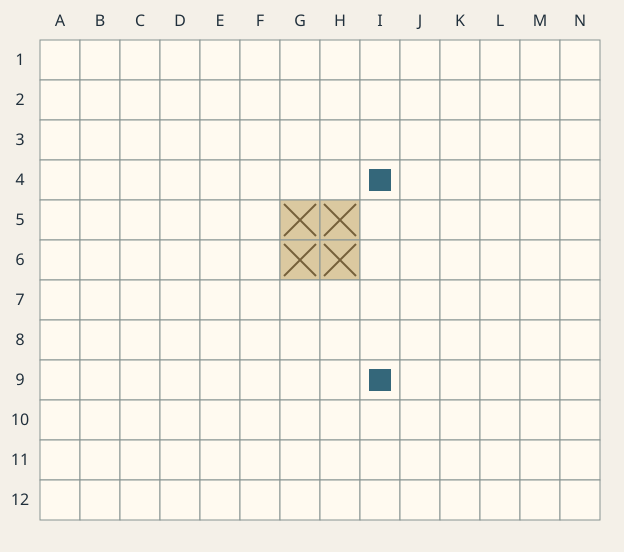

Одинаковые правила, разная история
Все карты совпадают с сеткой нативного пакета: 14 × 12, клетка — 5 футов. G5/H5/G6/H6 — трудная местность; I4/I9 — половинное укрытие. Остальные детали описания декоративны, пока ведущий не изменил поле штатно.
Расстановка и параметры
Начальные клетки героев: B3, B4, B5, B6, C3, C4, C5, C6; штатная подготовленная встреча назначает их присутствующим героям по именам. Противники: L3, L4, L5, L6, M3, M4. Используйте только нужное число фигур. Перед началом герои должны находиться в месте встречи.
Для 3 / 4 / 5 / 6 / 7 / 8 игроков: 2 / 3 / 3 / 4 / 5 / 6 противников, здоровье каждого 12 / 14 / 16 / 18 / 20 / 22. Защита 12; скорость 20 футов; одна ближняя атака +3, 1d4+1 дробящего урона, досягаемость 5 футов.
Враги — простая поддерживаемая модель. Мирные решения и ограничения сцены описаны отдельно; ведущий подтверждает их результат. После первого раунда напомните пути переговоров или отступления. Встречи не запускаются автоматически.
Тележка у служебного выхода
Только если после открытого спора охрана пытается увезти спорный реквизит, а группа решает физически удержать доступ. Ведущий отдельно предлагает инициативу; сцена не запускается автоматически.
Цель и выходы
Сохранить возможность описать тележку или спокойно вывести свидетеля. Победа не требует победить всех; можно отойти с уже зарегистрированными копиями, получить расписку или согласовать хранение при представителе.
Позвать Раису и представителя артели, предложить опись и независимое хранение либо добровольно отойти с копией. Сдача или отказ от драки не лишают группу образцов Олега. Работники принимают прекращение сопротивления и не требуют унижения.
Поведение противников
Совершеннолетний работник 21+ в рабочей куртке, выполняющий спорное распоряжение. Не чудовище и не тайный убийца; условная ближняя атака обозначает нелетальную потасовку.
Держатся возле тележки и пытаются оттеснить участников от прохода, не преследуют добровольно ушедших. Используют только обычное перемещение и одну штатную ближнюю атаку; травмы описываются без подробностей. При ясном предложении расписки останавливаются для разговора.
Размер группы
Для 3/4/5/6/7/8 игроков: 2/3/3/4/5/6 противников; каждому 12/14/16/18/20/22 HP соответственно, AC 12, одна ближняя атака +3 на 1d4+1. При 3–4 игроках одна тележка и один выход; при 5–6 добавить место для переговорщика; при 7–8 дать двум парам разные безопасные выходы. Никаких дополнительных атак, таймеров или автоматических захватов.


Сетка 14×12, клетка — 5 футов. Трудная местность только в G5, H5, G6, H6 (четыре клетки): сложенная ткань. Половинное укрытие в I4 и I9: ящики. Тележка у северной кромки — декорация; открытые проходы на юге и западе доступны для отхода. Ничто не падает автоматически. Выходы и прочие детали задаёт ведущий в описании; на нативном поле дополнительных препятствий нет.
Пропуск под ладонью
Необязательная встреча при подготовке закрытой проверки, только если охрана физически перекрывает согласованный проход и игроки выбирают силовое удержание позиции вместо посредника или переноса.
Цель и выходы
Обеспечить добровольный выход присутствующих и сохранить бумаги. Разрешённый успех — договориться об узком допуске, уйти в артель или дождаться представителя; вход любой ценой не является целью.
Предъявить узкий допуск с представителем бюро, договориться о поочерёдном входе добровольцев или перенести встречу в артель. Отступление с документами сохраняет все источники. Охрана принимает сдачу и разрыв контакта без конфискации заранее переданных копий.
Поведение противников
Взрослый сотрудник 21+ в мокрой форменной куртке. Боится потерять смену; считает, что удерживает порядок, и готов принять ясное письменное решение.
Остаются у турникета, прикрывая друг друга обычным расположением. Применяют лишь абстрактную нелетальную ближнюю атаку и прекращают преследование за пределами проходной. Григорий не приказывает атаковать и может передать предложение о разговоре.
Размер группы
Для 3/4/5/6/7/8 игроков: 2/3/3/4/5/6 противников с 12/14/16/18/20/22 HP; AC 12, одна атака +3 на 1d4+1. При 3–4 сосредоточить действие у одного окна; при 5–6 выделить переговорную сторону; при 7–8 дать четвёртой паре место для организации добровольного выхода. Сложность документов не растёт с числом людей.

Сетка 14×12, клетка — 5 футов. Трудная местность только в G5, H5, G6, H6 (четыре клетки): переносные стойки. Половинное укрытие в I4 и I9: конторки. Северная дверь ведёт в студию, южная — на улицу. Уличный выход не запирается автоматическим сценарием. Выходы и прочие детали задаёт ведущий в описании; на нативном поле дополнительных препятствий нет.
Незаконченная команда
После финального предъявления, только если по установленной реакции начальства сопровождающие пытаются удержать человека или носитель, а игроки сознательно выбирают физическое вмешательство. При мирном завершении встреча не происходит.
Цель и выходы
Дать желающим уйти и сохранить доступ к независимым копиям. Можно завершить столкновение переговорами, добровольным отходом или сдачей после передачи людей представителю; победа над всеми не обязательна и не определяет истинность обвинения.
Позвать Олега и Марину, показать, что оригиналы уже переданы или имеют независимую копию, и предложить записать возражение вместо удержания. Можно выйти через заранее согласованный боковой проход. Сдача не вызывает расправы; люди и доказательства не исчезают автоматически.
Поведение противников
Наёмный взрослый 21+ с повязкой дежурного, которому выдали противоречивое распоряжение. Не обладает сверхъестественными силами; близкая потасовка описывается как условное нелетальное препятствие.
Держатся между столом носителей и главным выходом, но не лезут на башню и не запускают оборудование. Используют обычное движение и одну штатную ближнюю атаку. При предъявлении расписки о внешнем хранении носителей готовы прекратить бессмысленное удержание.
Размер группы
Для 3/4/5/6/7/8 игроков: 2/3/3/4/5/6 противников, HP 12/14/16/18/20/22, AC 12, одна ближняя атака +3 на 1d4+1. При 3–4 достаточно одного сопровождаемого добровольца; при 5–6 две группы выходят по согласию; при 7–8 пары делят сопровождение, разговор и сохранность. Не вводить заложников или обязательных потерь ради масштаба.

Сетка 14×12, клетка — 5 футов. Трудная местность только в G5, H5, G6, H6 (четыре клетки): пустые рамки декораций. Половинное укрытие в I4 и I9: низкие столы. Главный выход на юге, согласованный боковой — на востоке. Башня вне игровой зоны и не служит опасностью. Выходы и прочие детали задаёт ведущий в описании; на нативном поле дополнительных препятствий нет.